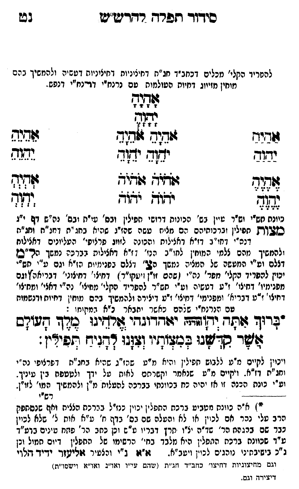

Neue Klartextfassung
[להפריד הקלי' מכלים דכחב"ד חג"ת דחיצוניות דעשיה ולהמשיך בהם מוחין מזיווג דחיות העולמות עם נרנח"י דנרנח"י דנפש.] אָהָיָהָ יָהָוָהָ === טבלה === [טור ימין] אַהַיַהַ יַהַוַהַ אֶהֶיֶהֶ יֶהֶוֶהֶ [טור אמצעי] אֹהֵיָהֵ אֹהֵיָהֵ יֹהֵוָהֵ יֹהֵוָהֵ אֹהֹיֹהֹ אֹהֹיֹהֹ יֹהֹוֹהֹ יֹהֹוֹהֹ [טור שמאל] אֵהֵיֵהֵ יֵהֵוֵהֵ אְהְיְהְ יְהְוְהְ === סוף טבלה === [כוונת תש"י ותש"ר עיין בס' הכוונות דרושי תפילין ובס' עו"ת ובס' נה"ש דף י"ג] מצות [תפילין וברכותיהם הם מצות עשה שהז"ג שהיא בחג"ת דחג"ת וחג"ת דנה"י דחו"ב דז"א דאצילות והכוונה לזווג פרצופי' העליונים דאצילות ולהמשיך מהם צלמי המוחין לחו"ב הנז' דז"א דאצילות בברכה נמשך הל"ם דצלם וע"י המעשה של המצוה נמשך הצ' דצלם בפנימיות הז"א וגם ע"י תש"י יכוין להפריד הקלי' מפר' נה"י (שהם זו"ן ויעקו"ר) דחיצו' דחיצוני' דבריאה וגם מפנימיו' דחיצו' ז"ע דעשיה וע"י תש"ר להפריד הקלי' מחיצו' נה"י דאצי' ומחיצו' דחיצו' ז"ע דבריאה ומפנימי' דחיצו' ז"ע דיצירה ולהמשיך בהם מוחין דחיות ודנשמות עם הנרנח"י שבהם כאשר יתבאר כ"א במקומו:] *ברוך אתה יהוה (אדני) יאהדונהי אלהינו מלך העולם אשר קדשנו במצותיו וצונו להניח תפילין: [ויכוין לקיים מ"ע ללבוש תפילין והיא מ"ע שהז"ג שהיא בחג"ת דפרצופי נה"י וחג"ת דז"א. ויקיים מ"ע שנאמר וקשרתם לאות על ידך ולטטפת בין עיניך. וע"י כונת הכנה זו אז יהיה כח בכוונתו בברכה להעלות מ"ן ולהמשיך המו' לזו"ן.] [הערת תחתית: *) א"ה כוונת מטבע ברכת התפלין יכוין כנז"ל בברכת הציצית ואף שנסתפק הרב עלי נהר אם לכוין או לא והעלה שם בס' בדף ח' ע"א אות ל' שלא לכוין כבר שם בהגהת הר' שד"ה יל"ו תרץ דבריו ע"ש וכן כתב הר' פתח עינים בדע"ד ע"ד שכוונת ברכת התפלין היא מלבד בחי' הרשימו של התפלין דיום תמול וכן ג"כ בישיבתינו נוהגים לכוין ויעב"א. א"א נ"י והצעיר אליעזר ידיד הלוי.] [תיקון שנדפס בתחתית העמוד:] וגם מחיצוניות דחיצו' כחב"ד חג"ת (שהם עי"ו ואו"נ ואו"א וישסו"ת) דיצירה וגם.
Original gegen neue OCR · Niqqud für Vergleich ausgeblendet
Original
[להפרידK122-001 הקלי' מכלים דכחב"ד חג"ת דחיצוניות דעשיהK122-002 ולהמשיך בהם מוחין מזיווג דחיות העולמות עםK122-003 נרנח"י דנרנח"י דנפש.] אהיה יהוה === טבלה === [טור ימין] אהיה יהוה אהיה יהוה [טור אמצעי] אהיה אהיה יהוה יהוה אהיה אהיה יהוה יהוה [טור שמאל] אהיה יהוה אהיה יהוה === סוף טבלה === [כוונת תש"י ותש"ר עיין בס' הכוונותK122-004 דרושי ∅K122-005 תפילין ובס' עו"ת ובס' נה"ש דף י"ג] מצות [תפילין וברכותיהםK122-006 הם מצות עשה שהז"ג שהיא בחג"ת דחג"תK122-007 וחג"ת דנה"י דחו"בK122-008 דז"א דאצילות והכוונהK122-009 לזווג פרצופי'K122-010 העליונים דאצילות ולהמשיך מהםK122-011 צלמי המוחין לחו"בK122-012 הנז' דז"א דאצילות בברכה נמשך הל"םK122-013 דצלם וע"י המעשהK122-014 של המצוהK122-015 נמשך הצ' דצלם בפנימיותK122-016 הז"א וגםK122-017 ע"י תש"יK122-018 יכוין להפריד הקלי' מפר'K122-019 נה"י (שהם זו"ן ויעקו"ר) דחיצו'K122-020 דחיצוני' דבריאהK122-021 וגם מפנימיו' דחיצו' ז"ע דעשיה וע"יK122-022 תש"ר להפרידK122-023 הקלי' מחיצו'K122-024 נה"י דאצי' ומחיצו' דחיצו' ז"ע דבריאהK122-025 ומפנימי' דחיצו' ז"עK122-026 דיצירה ולהמשיך בהםK122-027 מוחין דחיות ודנשמות עם הנרנח"י שבהם כאשר יתבארK122-028 כ"א במקומו:] *ברוך אתה יהוה (אדני) יאהדונהי אלהינו מלך העולם אשר קדשנו במצותיו וצונו להניח תפילין: [ויכויןK122-029 לקיים מ"עK122-030 ללבוש תפילין והיא מ"ע שהז"גK122-031 שהיא בחג"ת דפרצופיK122-032 נה"י וחג"ת דז"א.K122-033 ויקיים מ"עK122-034 שנאמר וקשרתם לאותK122-035 על ידך ולטטפת ביןK122-036 עיניך. וע"י כונת הכנהK122-037 זו אז יהיה כח בכוונתוK122-038 בברכה להעלות מ"ן ולהמשיך המו' לזו"ן.] [הערת תחתית: *)K122-039 א"ה כוונת מטבע ברכת התפליןK122-040 יכוין כנז"ל בברכת הציצית ואף שנסתפק הרב עלי נהר אםK122-041 לכוין או לא והעלה שם בס' בדף ח' ע"א אות ל'K122-042 שלא לכוין כברK122-043 שם בהגהתK122-044 הר' שד"ה יל"ו תרץK122-045 דבריו ע"שK122-046 וכן כתב הר' פתח עיניםK122-047 בדע"ד ע"ד שכוונת ברכתK122-048 התפלין היא מלבד בחי' הרשימו של התפליןK122-049 דיום תמול וכןK122-050 ג"כ בישיבתינוK122-051 נוהגים לכוין ויעב"א. א"א נ"י והצעיר אליעזרK122-052 ידיד הלוי.] [תיקון שנדפס בתחתית העמוד:] וגם מחיצוניות דחיצו'K122-053 כחב"ד חג"ת (שהםK122-054 עי"ו ואו"נ ואו"א וישסו"ת) דיצירה וגם.K122-055
OCR · fehlbar
סידוך תפרש רדדיש"ישט בבש להפרידK122-001 הקלי' מכלים דכחב"ד חג"ח דחיציניות דחיציניות דפשיהK122-002 ולהמשיך בהם מוחין מזייוג דחיוח הטולמות טםK122-003 נרנח"י דדדנח"י דנפש. ודגה 4- 7 ו ו גדג- - ז[ ל זזדיר זוד(ג ז[ד(ג 6דנ9 ימוד צד יז[ד נמגח צזחוד זזגד' דוא ללל ' - - - :. ג (2. 3 2 4- 3 - [ש נד[זש ידוש לזב ז[ף ניונת חש-י וש"ר שיין בש' הנינותK122-004 דרושי חפילין ובס' עי"ת ובס' גה"ש דף י"ג סבותK122-005 תפילין וגרנוחיהםK122-006 הם מנינז טשה שהויג שי:יו] בחג "ז דחנ"חK122-007 וחג"ת דנה"י גחו"בK122-008 דז"א דאצילות והכונהK122-009 לזווג פדציפי'K122-010 העליונים דאצילוח ולפמשיך נזהםK122-011 צלמי המוחין לחו"גK122-012 הנז' : ז"8 דאציליה בבדכ9 נמבך הר"בזK122-013 דצלם וע"י המטשהK122-014 של המציהK122-015 נמשך ה' דללם בפנינזיוחK122-016 הז"א יגםK122-017 ע"י נחש"'K122-018 יכוין להפריד הקלי' מסר'K122-019 נה"י ן שהם זוצץ ישקו"ר ץ דחיצי'K122-020 דחיצוני' דבריאהץK122-021 וגם מפנימיו' דחיצו' ז"ע דעשיה וט"יK122-022 תש"ר להפריץK122-023 הקלי' מחיצי'K122-024 נה"י דאצי' ומחלו' חצו' ז"נו דבריא 'K122-025 ומפנימי' דחוצו' וטK122-026 דיצירה ולהמשיך ברםK122-027 מוחין דחיוח ודנשמוח טם ודנרגח-י של הע כאשדר יחבארK122-028 כ"א דמקונז: : יעדוד זזותד ודי דשד יזהודדוגדי לוריגו בדד דזעזקש ישר בדשגו בנלוחיו (צןגו דדגיח תפידין: ו צ' -ץז4 צץ צ' ' צ' 7 צ 6-4 - - : 7 4 : - 7 - וינויןK122-029 לקיים מ"נK122-030 ללבוש חפיל ין והיו מ"ט שזז"גK122-031 שהיא בחג"ת דפרצופ'K122-032 נה"י וחב"ח דז"א -K122-033 ויקיים מ"טK122-034 שנאמר וקשרתם לאיתK122-035 על ידך ולטטפח בי]K122-036 עיניך. וע"י כזנת הבנהK122-037 זו אז יהיה כח בכוונחיK122-038 בברכה להעלות מ"ן ולהמשיך המו' לזו"ן. - "' רשיי יK122-039 א"ה נוונס מזטביט ברכח הספל יןK122-040 יכוין כנז"ל בברכח הצציח וחף שנסחפק דרב טלי נכר חםK122-041 לכוין או לא והעלה שם בס' בדף ח' ע"א אוח לK122-042 שלא לכיין נברK122-043 שם בהגהחK122-044 הר' שדזה יצ"ו חרץK122-045 דבריו ט"שK122-046 וכן כתב הר' פוזח שיניםK122-047 בדע"ד ע"ד שכוונח ברכחK122-048 התפלין היא מלבד בחי' הרשימו של טחפליןK122-049 דיום חמול זנןK122-050 ג"כ בישיבח"ניK122-051 נוהגים נכו. ויטב"א. :"זו ב"י וכצטיר זזליטזךK122-052 ידיד דולוי וגס ב(דזישוביות דוזי2ו'K122-053 כחב"ד זג"ת . יגוד שK122-054 עי"ו וג(ו"2ג וג(ו"גן וישסו"ת ) דישי חץ וגש .K122-055